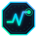

Trade with your eyes open.
Inspect real contract odds, benchmark rule ideas against 200 randomized runs, watch live digit circles with tick countdowns, and automate verified DBot setups with strict loss limits.
One workspace, complete coverage
Every desk shares the same live WebSocket pool, risk caps, and saved DBot registry.
Honest math over guesswork
Built to surface empirical probabilities clearly — without exaggerated claims or hidden risk.
True contract odds
Every desk displays real payout return alongside the exact win rate required to clear broker spread.
200-run stress tests
Strategies are benchmarked directly against uniform random entries so coincidence is separated from edge.
Zero-risk sandbox
Every manual trade button, countdown timer, and automated DBot runs cleanly in Paper Mode before live stakes.
Protected staking
Enforced max-stake caps, session stop-loss, trailing profit locks, and instant Emergency STOP always remain active.